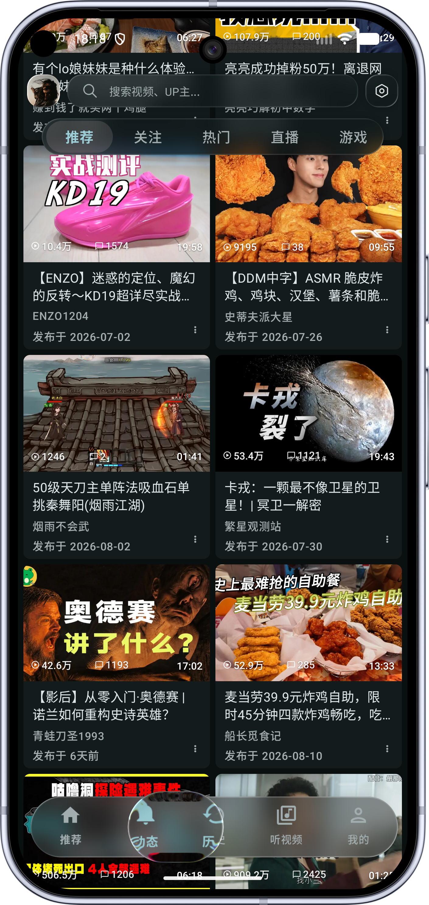

你以为 BiliPai 只是去广告？这些隐藏功能我翻了三个月才挖全
第三方 B 站客户端 BiliPai 远不止免广告那么简单——空降助手手动标记、定时关闭延长、直播后台播放、媒体中心联动车载……五个藏得比官方还深的功能，一个比一个能提升日常体验。
引子：你可能只用了它 30% 的功力
当初从官方 App 转BiliPai官网，纯粹是冲着"去广告 + 免费看 4K"两个卖点。安装包从官方下载拿，装完直接登录、追番、离线缓存，跟官方 App 没什么区别——觉得这就是它的全部了。
结果有一次半夜躺床上听 ASMR，按出了右下角一个从没注意过的按钮，自动停播救了我一整夜的电量。然后就一发不可收拾：翻设置、翻插件中心、翻BiliPai文档，发现这家伙藏的东西比想象中多太多。今天就把我挖出来的五个没人主动宣传、官方也不教、但用起来真香的隐藏功能整理出来。
隐藏功能一：空降助手不止能跳，还能手动标记
大家知道 BiliPai 有个插件叫"空降助手"（就是 B 站版的 SponsorBlock），启用后自动跳过恰饭、自我推销、片头片尾。但绝大多数人打开插件开关就再也没管过——其实它还有个手动提交标记的入口，藏得比自动跳本身还深。
具体在哪：播放任意视频时长按进度条上的空降助手区域（就是进度条上那段特殊颜色标记的位置），长按会弹出一个"标记片段"窗口。你可以自己选片段类型（恰饭/自我推销/片头/片尾），拖时间轴设起止点，提交到社区数据库。之后别人看同一个视频也能自动跳过这段。
什么场景真有用？热门视频通常社区已经标好了，但 UP 主突然插了一段新的合作、或者小众视频没人标记，这时候你手动标一下，几分钟就能贡献一条。我给一个 UP 主的三期视频补过恰饭标记，后来查统计发现有两千多人用到了——这种微小的社区反馈比单纯的"跳过"爽多了。
什么人可以无视？从不看恰饭视频、或者看恰饭也不觉得烦的人，这个功能确实用不上。
隐藏功能二：定时关闭倒计时中途可以延长或取消
听视频模式右下角那个定时关闭按钮，很多人以为就是"选个时间到点停"。我也是用了快两个月才发现：倒计时在跑的时候，右上角有个不起眼的倒计时显示，点它就能弹出一个小菜单——延长 10 分钟、取消、改时间，随便切。
而且时间到了不是突然断音，是渐渐淡出然后停止播放、退出听视频模式，回到主界面但不杀进程、不清后台。这个细节太重要了——夜里听白噪音睡着，不会被突然断音吵醒，手机也不会耗一整夜电。
中途想续听也很方便，比如"再听 10 分钟就睡"，点一下延长按钮就行，不用重新进设置选时间。
隐藏功能三：直播可以后台继续拉流
BiliPai 的直播功能（底部导航 → 直播）很多人以为就是在前台看直播，其实它支持后台播放——切到其他 App、锁屏、甚至息屏，直播流还在继续拉，声音不中断。
这点和官方 App 体验差不多，但有个官方没做的细节：直播间右下角有个动态跳转按钮，点击能直接跳到主播的动态页面，看完动态再切回直播不影响播放。还有分区浏览里的"学习"分区，藏在直播页第三栏，很多人以为只有娱乐和游戏，其实课程、讲座、教学类直播全在那里。
直播后台播放对考研党、公开课党特别友好——可以边看直播边记笔记，或者锁屏挂着当背景音。但有个坑要注意：直播是实时流，不支持进度跳转也不支持离线缓存，这两个别抱期望。

隐藏功能四：蓝牙耳机按键能自定义，还能接 Android Auto
BiliPai 正确接入了 Android 的 MediaSession 媒体会话机制，带来三个很少人知道的联动：
第一，蓝牙耳机按键映射。 默认是单击播/停、双击下一首、三击上一首、长按快进快退，但可以在设置 → 后台与通知 → 媒体会话里自定义。我把双击改成了"下一集"，听番剧的时候按两下耳机就能跳下一集，不用掏手机。
第二，Android Auto / 车载接入。 手机连上车载 Android Auto 后，BiliPai 会出现在车载媒体源列表里，方向盘按键能直接控制播放。开车听课程、听有声书特别方便——但千万别看视频画面，专注驾驶。
第三，智能手表控制。 部分 Wear OS 手表能看到正在播放的标题和基础控制，跑步时不用摸手机。
这些功能全靠一个媒体会话接入点实现，藏得比较深，但每一个都是日常高频场景。
隐藏功能五：账号风控分级建议——你的大号其实不该登 BiliPai
这不是功能，但绝对是没人主动提醒你、但你必须知道的隐藏规则。B 站第三方客户端处于灰色地带，风险按行为分级，但官方不教、文档也只提一句"有风险"。我翻了完整的风险表才搞清楚哪些能做哪些绝对不能做：
极低风险（随便用）：纯观看、追番、离线缓存、倍速、后台播放、画中画。这些行为和官方 App 差异不大，几千活跃用户日常这么用都没事。
中风险（谨慎）：Cookie 导入、非官方来源的 JSON 插件、短时间切换多个账号。内置插件（比如空降助手）风险很低，但自己手写的 JSON 规则插件要仔细看它声明了什么权限。
高风险（别碰）：用 BiliPai 发评论、弹幕、动态。B 站对创作行为检测比观看严格得多，别拿第三方客户端做这些事。
建议很直接：日常观看用 BiliPai，充电、买大会员、发评论用官方 App。高价值账号（有大会员、有粉丝）最好用小号登 BiliPai，主号留在官方 App——即使小号被风控也不影响主号。
一个坑：JSON 规则插件别乱装
说到插件顺便提一个踩过的坑：BiliPai 支持 JSON 规则插件（用户自定义的规则集），但这类插件可以声明 capabilities 权限——有些会发起额外的 API 请求、甚至上传数据。内置插件（空降助手、Anime4K 画质增强这些）是官方维护的，放心装；但第三方 JSON 插件，只装能看懂 capabilities 声明的、来源可信的。我试过一个匿名写的弹幕过滤插件，装完发现它偷偷收集观看历史，直接卸载了。
收尾
BiliPai 的[官网]和文档站内容还挺全的，但这些功能要么藏在设置深水区、要么没有独立的宣传入口——大多数用户装完就没再翻过设置。把它用透不难，花半小时把设置和插件中心从头到尾点一遍就行。至少，下次躺床上听白噪音之前，记得看一眼右下角那个定时关闭按钮。
这套客户端的资料在三个仓库都能拿到，按需 clone 就行——GitHub上是完整仓库，Gitee适合国内用户，GitCode则是第三份备份。BiliPai 本体的安装包和相关资源在仓库里的组织方式也挺清晰的。